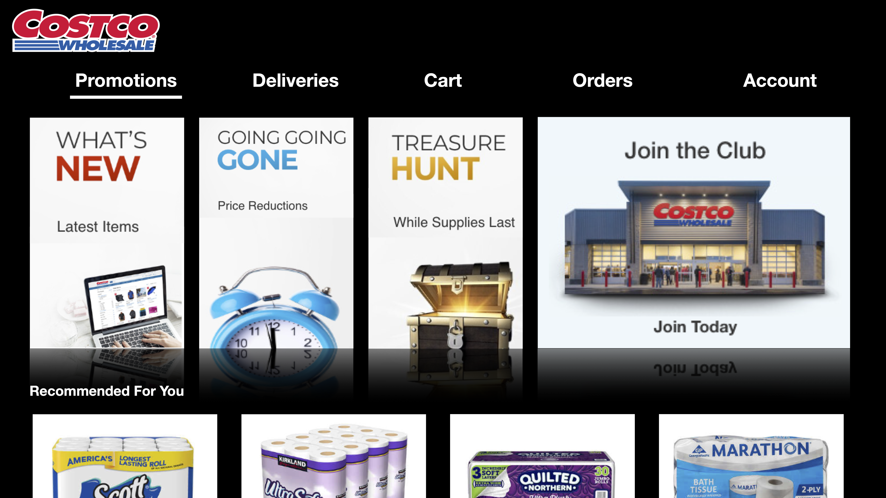

Case Study: Expanding the Costco Digital Experience
Background
Today, with the emerging need to meet the demands of using digital services, Costco has opened an online store front. Unlike Amazon or other ecommerce websites, Costco is fairly new to having a web presence. It is important to provide customers a digital experience that will engage them through multiple devices and platforms. As a recent employee of a Costco, I felt compelled to design the Costco user experience, including the Smartwatch and Smart TV app.
Goal
The goal of this project is to design Costco's online and offline shopping experience for smartwatch, dashboard and wall.
Design Rationale

Desktop View
The current Costco website in desktop view and mobile app contains all products that are sold and distributed through Costco. There is a better need to expand on the webpresence to enhance the user experience for home and in-store shopping. For this project, I designed mockups of two digital products:
- Smart Watch app to assist with in store navigation and checkout processes.
- Smart TV app to support large screen shopping and querying order status through AI-driven conversational agents.
Wearables or Smartwatches are always-on devices that have the potential to offer customers a unique shopping experience in Costco warehouses. For instance, smart watches can assist users with in store navigation and guide them through the checkout process. With increasing ubiquity of intelligent AI-driven conversational agents (such as Amazon Alexa, Google Home and Apple Siri) that connect to Smart TVs, it is now possible to expand the reach of consumers' shopping experience to the home. Users can make voice commands to view catalogued products in a large screen or query their recent order status.
Smart Watch Interface


{kind=link}
{kind=link}
{kind=link}
{kind=link}
{kind=link}
{kind=link}
{kind=link}
{kind=link}
{kind=link}
{kind=link}
Users can view their membership card, items on sale, current orders, and account information. Instead of reminding themselves to bring their Costco membership card, users can simply display their membership ID on their watch upon entering the warehouse, and scan the QR code to make a purchase.
Smart TV Interface

TV app Main Screen

TV app Product Catelogue View
The TV app interface lets users navigate between promotional items in large view. Thus there will be large emphasis on showcasing the product through photos an videos and feature highlights for each item. Users can decide to make purchase directly from the TV based on their impression of the product.
TV app Order Status View
The order dashboard display lets users view all orders with buy again feature, open order, online order, cancelled order and also leave feedback on the purchased product with simply clicking thumbs up or down icon. User can go to open order to change several features such as payment method, shipping address, quantity.